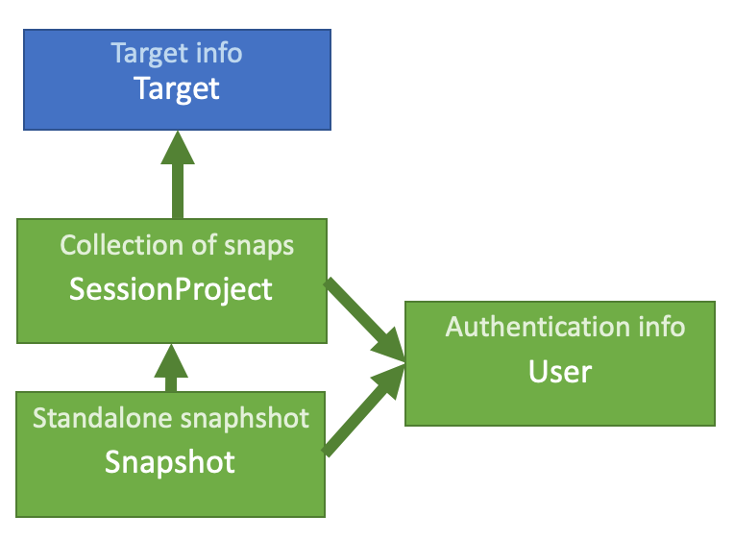

Projects data (Models)¶
Schema overview¶
[Explain schema]
Model details¶
-
class
viewer.models.User(*args, **kwargs)¶ Users within the Django authentication system are represented by this model.
Username and password are required. Other fields are optional.
-
class
viewer.models.SessionProject(*args, **kwargs)¶ Django model for holding information about a fragalysis user project - a set of sessions saved by a user
- Parameters
title (CharField) – The title of the project
init_date (DateTimeField) – The date the project was initiated (autofield)
description (Charfield) – A short user-defined description for the project
target (ForeignKey) – Foreign Key link to the relevent project target
author (ForeignKey) – A link to the user that created the project
tags (TextField) – A comma separated list of user-defined tags - for searching and tagging projects
-
class
viewer.models.Snapshot(*args, **kwargs)¶ Django model for storing information describing a static snapshot of a fragalysis page - multiple snapshots make up a project
- Parameters
id (Autofield) – Auto-created id for the session, used in url accession
type (CharField) –
- Describes the session type:
SNAPSHOT_TYPE = ( (INIT, “INIT”), # Initial snapshot generated by system (AUTO, ‘AUTO’), # Automatic generated by system (MANUAL, ‘MANUAL’) # Manual generated by user action
)
title (Charfield) – The title of the snapshot
author (ForeignKey) – Foreign key link to the user that created the snapshot
description (Charfield) – Short user-provided description for the snapshot
created (DateTimeField) – Auto-created timestamp for when the snapshot was created
data (TextField) – Field to hold the json data that is passed from the front-end describing what to load into the react components to reproduce the session state
session_project (ForeignKey) – If the snapshot is part of a project, a foreign key link to the relevant project (optional)
parent (ForeignKey(self)) – Foreign key link to another Snapshot instance describing the current Snapshot parent (optional)